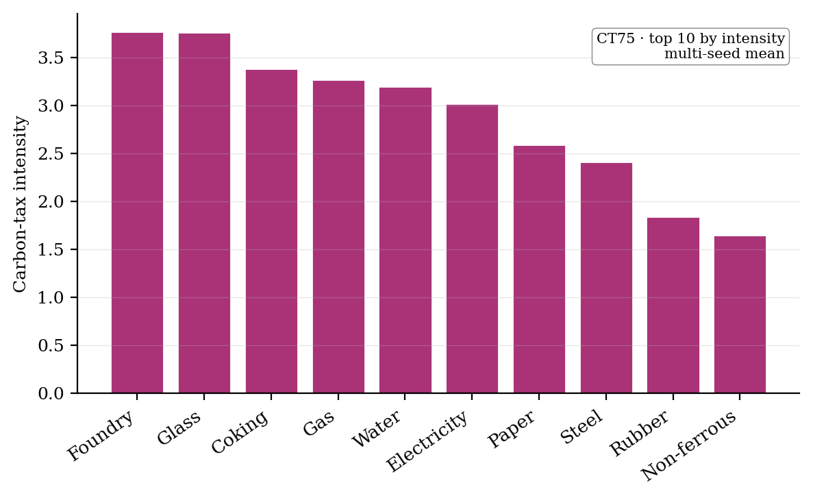
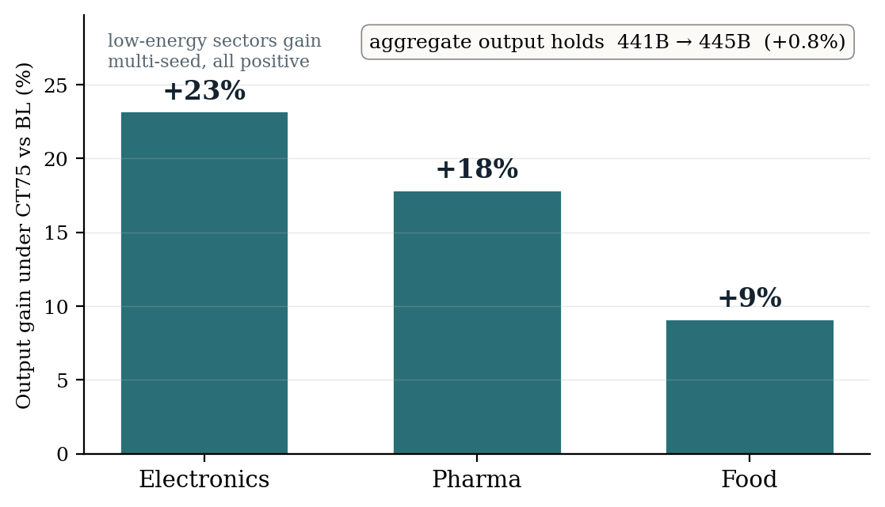

Energy Prices, Firm Heterogeneity & Industrial Competitiveness
An empirically calibrated macroeconomic agent-based model for German energy policy
Authors
Hankui Wang speaker
Philipp Harting PI
Universität Bielefeld · Université Côte d'Azur
CEF 2026 · Society for Computational Economics · Ca' Foscari, Venice · 29 June 2026
The Question
Why heterogeneity is the whole question
Germany imports ~70% of its primary energy, and 96% of manufacturing firms bear full energy costs.
But energy intensity is wildly uneven: Chemicals, Glass, Steel and Paper run ~10× more energy-intensive than Pharma or Electronics.
A carbon price or an energy shock is therefore not an aggregate shock — it is a distributional one.
Research questions
⚡
RQ1 · Incidence
How do energy-price & carbon-tax increases pass through to cost & competitiveness across heterogeneous sectors?
🏭
RQ2 · Firm response
How do firms respond — efficiency investment, fuel switching, pricing, output — and is the response asymmetric?
🧬
RQ3 · Structure
How do micro responses aggregate into shifts in industrial structure & the energy-intensive base?
🎯
RQ4 · Policy design
Which carbon-tax levels, revenue recycling & targeting best balance competitiveness and decarbonization?
The gap representative-agent models miss: with one average firm, the distribution of energy intensity vanishes —
and with it the incidence, the asymmetric response, and the structural-change channel. Heterogeneity must be modelled, not averaged away.
The Framework
The framework & the hybrid 44-unit resolution
EWaGI — an enterprise-scale, Eurace@Unibi-grounded macro ABM of the German economy:
45,670 agents (3,598 firms + 41,039 households), seeded from the real German input–output structure —
structurally sound and internally consistent from tick one, settling to a realistic German macro as it runs.
Country (GER) → Region → Sector (NACE) → Division → Firms / Households
The computational wall — and the way through
72
full sector × division
maximal realism — but the goods market fragments into 132 markets and the run turns intractable
→
44
HYBRID_MERGED
17 sector-level + 27 division-level — division granularity exactly where energy intensity varies (Mining, Manufacturing, Electricity)
The design idea: spend resolution where the economics lives — fine division detail where energy intensity varies, aggregate elsewhere.
The Mechanism — RQ1 / RQ2
Who pays the carbon price — and how the economy reallocates
Integrated carbon-tax experiments — BL · CT50 · CT75 · CT100 (€/tCO₂) — over a full multi-year trajectory at 45,670 agents, a scale rep-agent and sandbox models cannot reach. Two robust, multi-seed findings: who bears the cost, and how the economy reallocates.

RQ1 — the energy-intensive sectors bear the cost. Carbon-tax burden per unit of output lands on glass, steel, coking, paper — 15–37× pharma's. They pass it through; they do not collapse.3-seed CT75 · fixed-energy matrix

RQ2 — the tax reallocates, it does not shrink. Low-energy sectors — electronics, pharma, food — gain competitiveness; aggregate output holds.3-seed · all positive
Together: the tax falls on the energy-intensive, reallocates toward the clean sectors, and the macro absorbs it — no aggregate output loss. The distributional story a representative agent cannot tell. And the macro that absorbs it? →
The Macro
A new macroeconomic foundation — at full scale
Three deterministic seeds (band shown) · 45,670 agents · a full decade. Across all three the spiral breaks — unemployment settles around 5% and output holds near 440B, instead of collapsing.
A new macroeconomic foundation — 45,670 heterogeneous firms, seeded from the real German economic structure, run end-to-end for a full decade and staying coherent. The macro core holds.
Closed the macro holds — a decade deep, three seeds
4–5%
unemployment — a realistic German rate
~3%/yr
inflation — controlled, normal range
~440B
output — stable, year after year
70/100
macro-health — a sound economy
circular flowdemand reaches every buyer — HH 35% · firms 44% · gov 10% · exports 11%supply sustains it — firms profitable +4% · ~99% active · ~1.3-mo stock
Closing the coming months
A short list remains — the investment share, the real-wage path, and public-debt dynamics. Then this foundation becomes a policy laboratory. →
The Program
From foundation to a policy laboratory
BuiltA hybrid, heterogeneous-firm energy macro — Eurace-grounded, seeded from the real German input–output structure, run end-to-end at 45,670 agents.
FoundThe heterogeneous micro economy coheres into one sound, stable macro — a decade deep, at the scale of a real economy. That coherence, at this scale, is the contribution.
NextA sound macro turns EWaGI into a calibrated energy-policy laboratory — carbon-price incidence, revenue recycling and targeting, at full heterogeneity. The remaining calibration is the road ahead.
EWaGI
Questions & Discussion
Thank you.
Contact
Hankui Wang
hankui.wang@univ-cotedazur.fr
Philipp Harting
Philipp-Clemens.HARTING@univ-cotedazur.fr
Energy prices · firm heterogeneity · the macro closure challenge